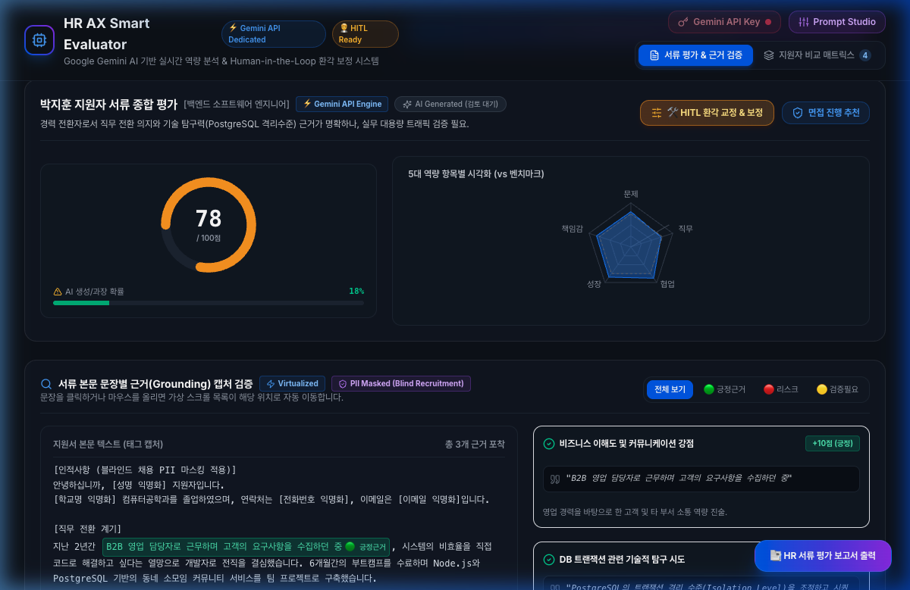

04. How It Works (Product Demo)
접수부터 실전 면접까지, 단 3단계 완결
STEP 1. 블라인드 보호
검출률 99.8%

브라우저 7종 PII 즉시 마스킹
성명·학교·연락처 등 7종 개인정보를 AI 전송 전 브라우저에서 즉시 익명화하여 유출을 차단하고 스펙 편향을 제거합니다.
STEP 2. 1:1 팩트체크
매칭률 92.4%

2단계 Fuzzy 형광펜 추적
초록(실적)·빨강(의심) 형광펜으로 원문과 1:1 매핑합니다. 오타·공백 보정(Levenshtein 85%+)으로 AI 환각을 원천 봉쇄합니다.
STEP 3. 면접 연계
질문 3종 + 체크리스트

실전 압박 질문 키트 자동 생성
서류 속 검증이 필요한 핵심 문장을 겨냥한 압박 질문 3종과 모범 답변 가이드를 생성해 면접관에게 즉시 제공합니다.
N-Gram Jaccard 자소서 상호 표절 매트릭스 기본 탑재
Human-in-the-Loop 평가자 최종 점수 수정 지원